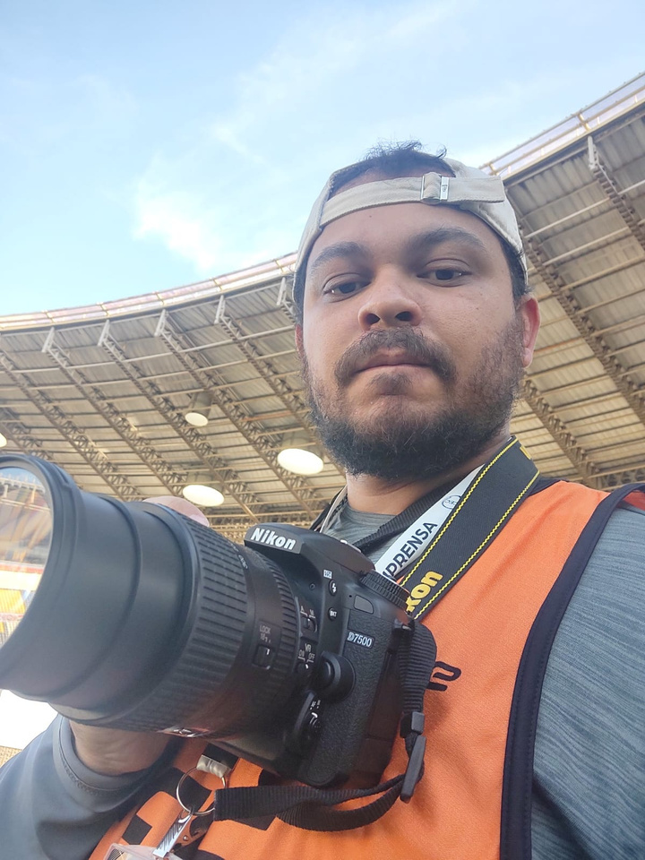
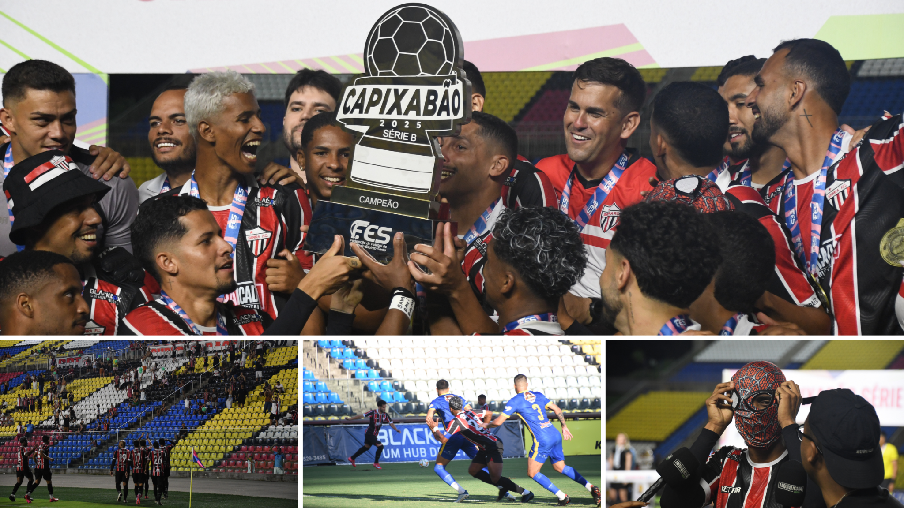
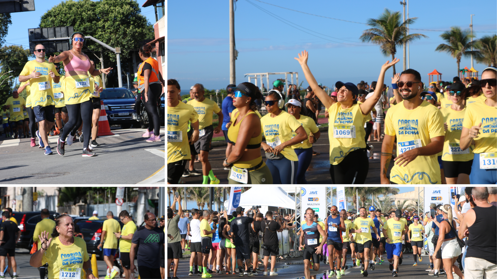
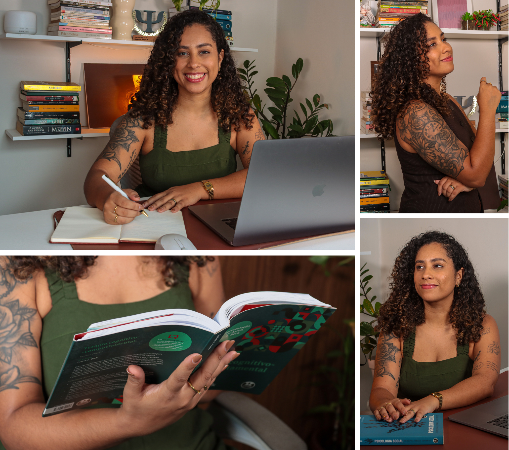
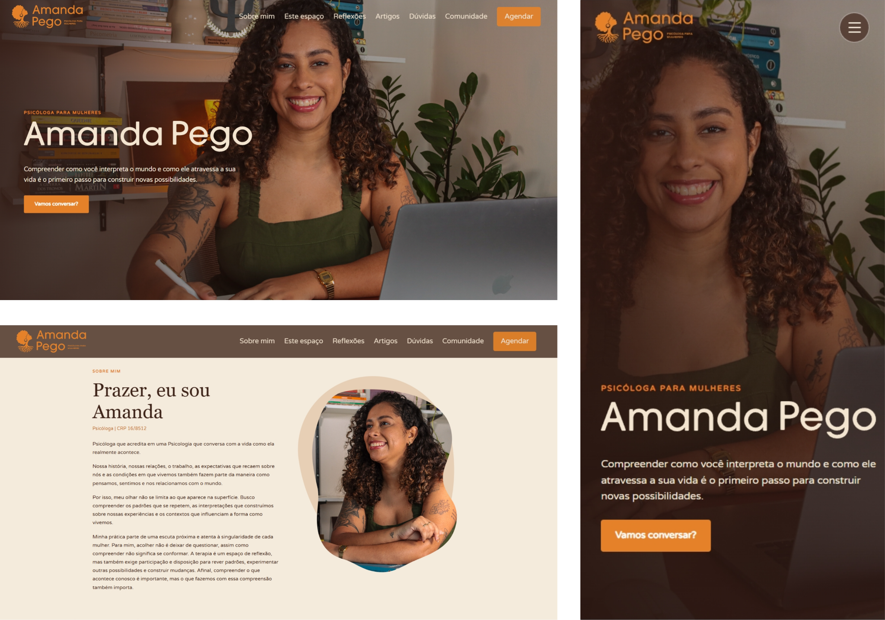
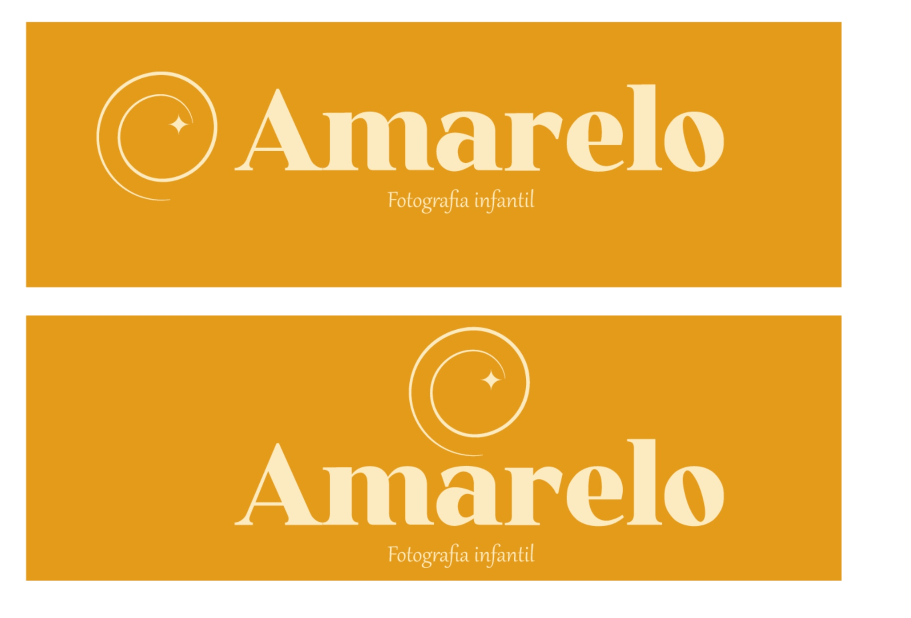
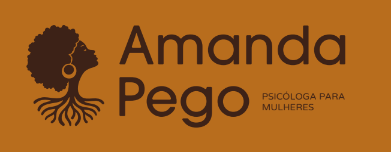

FOTOGRAFIA ESPORTIVA / 01
Copa ES
Rio Branco A.C. × Capixaba S.C.

PORTFÓLIO CRIATIVO 2026
Fotografia e design para transformar momentos, ideias e identidades em experiências visuais.

JHONATHA DA SILVA PEREIRAOlá, sou Jhonatha.
Sou estudante do curso de Multimídia e apaixonado por explorar diferentes formas de expressão visual. Tenho experiência em fotografia esportiva, onde aprendi a capturar a intensidade e a emoção dos momentos que definem o esporte.
Também desenvolvo projetos de design, criação de identidades visuais e experiências digitais. Gosto de unir técnica e criatividade para transformar ideias em imagens e soluções visuais com personalidade.
Vamos criar algo juntos ↗Registros que valorizam a energia, a emoção e as histórias por trás de cada acontecimento.
Rio Branco A.C. × Capixaba S.C.
Final · Serra × Forte FC

Movimento, encontro e celebração

Ensaio profissional · Retratos e identidade

Identidades, interfaces e materiais visuais pensados para comunicar com clareza e personalidade.
Desenvolvimento de uma presença digital com versão para desktop e dispositivos móveis.


Marca para fotografia infantil.

Logotipo para psicóloga especializada em atendimento a mulheres.
Meu interesse está em criar narrativas visuais que conectem pessoas, marcas e experiências — seja por meio de uma fotografia ou de um projeto de design.